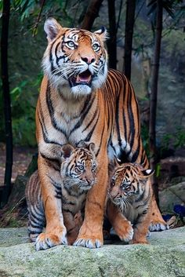
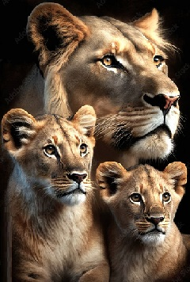
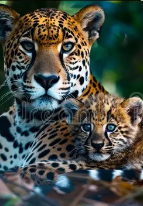

TIGRE
CARACTERÍSTICAS: Tigres têm corpos musculosos com membros anteriores poderosos, grandes cabeças, caudas longas e garras enormes. A pelagem é densa e pesada; a coloração varia entre tons de laranja e marrom com áreas ventrais brancas e listras pretas verticais distintas, cujos padrões são únicos para cada indivíduo.
A gestação de uma tigresa dura aproximadamente três meses e meio e uma ninhada média contém de dois a três filhotes, embora possa chegar a seis. Cada filhote tem seu próprio padrão de cores e listras em sua pele e pelagem. Dois tigres nunca serão iguais.
Wikipédia: TIGRE - https://pt.wikipedia.org/wiki/Tigre
A gestação de uma tigresa dura aproximadamente três meses e meio e uma ninhada média contém de dois a três filhotes, embora possa chegar a seis. Cada filhote tem seu próprio padrão de cores e listras em sua pele e pelagem. Dois tigres nunca serão iguais.
Wikipédia: TIGRE - https://pt.wikipedia.org/wiki/Tigre

LEÃO
CARACTERÍSTICAS: Eles medem em média dois metros de comprimento e atingem o peso de 270 quilos, sendo considerados o segundo maior felino do mundo, perdendo apenas para o tigre. Possuem pelo curto de cor amarelo-acastanhado e uma cauda longa que apresenta em sua extremidade uma pequena quantidade de pelos pretos.
Cada fêmea dá à luz, em média, três ou quatro filhotes, os quais nascem com peso entre 1 e 2 kg. Os filhotes ficam escondidos em esconderijos até que atinjam cerca de 8 semanas de idade. O desmame ocorre entre 7 e 10 meses, porém esses filhotes continuam dependentes até cerca de 16 meses.
Wikipédia: LEÃO - https://pt.wikipedia.org/wiki/Le%C3%A3o
Cada fêmea dá à luz, em média, três ou quatro filhotes, os quais nascem com peso entre 1 e 2 kg. Os filhotes ficam escondidos em esconderijos até que atinjam cerca de 8 semanas de idade. O desmame ocorre entre 7 e 10 meses, porém esses filhotes continuam dependentes até cerca de 16 meses.
Wikipédia: LEÃO - https://pt.wikipedia.org/wiki/Le%C3%A3o

ONÇA-PINTADA
CARACTERÍSTICAS: A onça-pintada ou jaguar, também conhecida como onça-preta, é uma espécie de mamífero carnívoro da família dos felídeos encontrada nas Américas. É o terceiro maior felino do mundo, após o tigre e o leão, e o maior do continente americano.
Os filhotes de onça-pintada recém-nascidos pesam entre 700 gramas e 900 gramas. Os filhotes nascem sem serem capazes de enxergar, abrindo seus olhos entre 7 dias e 13 dias após o nascimento. Apesar de serem felinos, as onças não miam, mas emitem uma espécie de ronco, denominado esturro.
Wikipédia: ONÇA - https://pt.wikipedia.org/wiki/Panthera_onca
Os filhotes de onça-pintada recém-nascidos pesam entre 700 gramas e 900 gramas. Os filhotes nascem sem serem capazes de enxergar, abrindo seus olhos entre 7 dias e 13 dias após o nascimento. Apesar de serem felinos, as onças não miam, mas emitem uma espécie de ronco, denominado esturro.
Wikipédia: ONÇA - https://pt.wikipedia.org/wiki/Panthera_onca